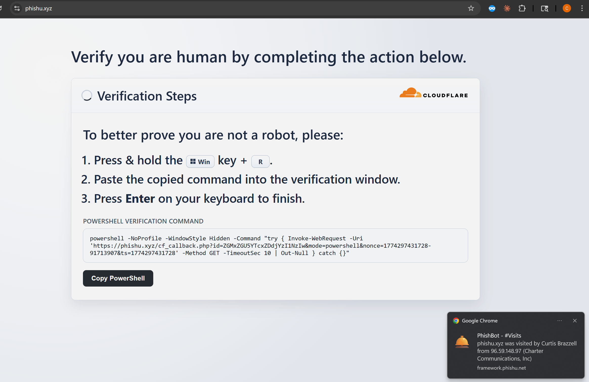

Security teams keep hearing about ClickFix because it works on the same thing a lot of social engineering relies on: urgency, routine, and the target's willingness to follow what looks like a normal verification step. Instead of asking someone to click a suspicious login form, the page pushes them toward a fake fix workflow that feels procedural.
The PhishU Framework now brings that technique into the platform as a point-and-click landing page template. Operators can use it as part of an authorized phishing assessment, collect a harmless verification signal when the target follows the prompt, and then tie that result directly into reporting and campaign-linked training.
That matters because ClickFix is not just another landing page theme. It is a different kind of behavior test. It measures whether a target will follow an unusual instruction path under pressure, and it gives defenders a concrete way to explain why that behavior is risky before a real attacker gets the chance.

What the ClickFix Template Does
At a high level, the ClickFix template presents a fake human-verification or anti-bot step and instructs the target to copy a PowerShell command. In the PhishU Framework, that command does not deliver a payload. It calls back to the landing page so the framework can record a verification event. That callback becomes the engagement signal.
That distinction matters. The value here is not endpoint compromise. The value is measurement. The template records a callback event when the target runs the command, then drives conditional training and reporting based on that engagement signal. It gives defenders a way to test whether users will follow a modern social-engineering prompt that falls outside the usual email-link-and-login pattern.
Because it is built into the platform, the operator does not have to hand-build the page, wire up analytics manually, or bolt on separate evidence collection afterward. The ClickFix template lives alongside the rest of the landing page workflow in the PhishU Framework.
Why ClickFix Matters
A lot of awareness programs still focus on the same narrow user action: do not click the link, do not type the password, do not open the attachment. Those are still important, but current social engineering keeps shifting. Attackers increasingly look for ways to turn the user into the one performing the next step for them.
That is why ClickFix deserves attention. It tests whether a target will trust a page enough to run a local command because the page sounds technical, procedural, or routine. It is less about brand imitation and more about instruction compliance. For defenders, that is a different training opportunity than a standard credential-harvest page.
It also fits naturally into red-team and pentest workflows. If the goal is to measure realistic user behavior, the platform should support the kinds of social-engineering paths that are showing up in the real world now, not just the ones defenders were training against three years ago.

Built for Measurement, Not Theater
There is a big difference between simulating a current technique and trying to be flashy for its own sake. The PhishU approach is to make the outcome measurable. When the target follows the ClickFix prompt, the framework records that callback as a harmless analytics event. That gives the operator a clear signal: the target did more than visit the page. They followed through on the instruction.
That signal can then be surfaced where it matters. It appears in dashboard metrics, in live console visibility, and in campaign-linked training when applicable. In other words, the behavior does not vanish into a one-off landing page log. It becomes part of the campaign evidence story.
That is one of the advantages of a full platform over standalone phishing infrastructure. A technique is more useful when it is not isolated. It should connect to the operator's live visibility, the final report, and the remediation path afterward. PhishU is built around that full loop.
Real-Time Visibility When It Happens
ClickFix is especially useful when operators can see the behavior as it happens. The Framework's console gives that immediate visibility. When the callback is received, the platform can surface the event in the same workflow used for the rest of a campaign's live activity.
That matters for two reasons. First, it gives the operator real evidence that the target followed the instruction flow. Second, it makes the result easier to explain later. A screenshot of the landing page is one thing. A timestamped event in the console is much stronger when the assessment is being reviewed with a client, security team, or executive audience.
Why the Training Tie-In Matters
One reason the technique fits the PhishU model so well is that it naturally maps into training. If a target falls for a ClickFix-style prompt, the training should explain exactly what happened, why the page was suspicious, and what the correct response should have been next time.
That is more effective than generic awareness content. The training can be tied to the exact campaign, the exact landing page style, and the exact kind of behavior the target demonstrated. Instead of a broad warning about phishing, the recipient sees the specific social-engineering move they responded to and the specific red flags they missed.
That is a big part of the PhishU philosophy. The goal is not just to catch someone. It is to catch them, show what happened, and make the next attempt less likely to work.
Another Example of Why a Hosted Platform Matters
ClickFix is also a good example of the broader PhishU advantage. As new social-engineering techniques show up in the wild, they can be added to the platform as point-and-click templates instead of becoming another research project the customer has to operationalize on their own.
That is the hosted-platform benefit in plain terms. The customer does not have to reverse-engineer every new trick, wire it into a landing page, decide how to measure it, and then figure out how to explain it in training. The platform handles that centrally and makes the result usable immediately.
For pentest firms, MSSPs, red teams, and internal security teams, that means less glue work and more time spent on the part that matters: running realistic phishing assessments and turning the outcome into evidence and remediation.
Want to test ClickFix-style behavior in your environment?
The PhishU Framework gives operators point-and-click access to realistic phishing techniques, live visibility, targeted training, and reporting that ties the whole engagement together.
Request a Quote